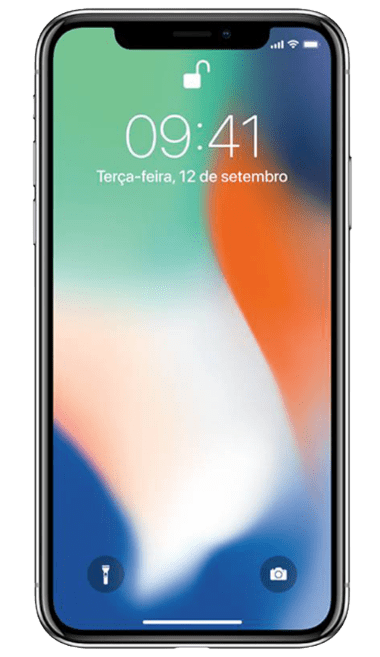
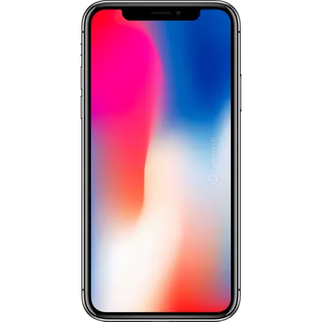

O iPhone X foi batizado com um algarismo romano para celebrar o décimo aniversário do iPhone; é o primeiro modelo da Apple com design praticamente sem bordas (com "notch" no topo) e sem o tradicional botão de início. Além disso, este celular ainda conta com certificação IP67, garantindo certa resistência à água e à poeira. Agora, sem o botão de início, o iPhone X usa gestos para navegar entre os aplicativos, isso trouxe muito mais agilidade e praticidade, de forma que, após acostumar, fica difícil voltar aos modelos anteriores. Este aparelho da Maçã inaugurou o recurso chamado Face ID, tecnologia de reconhecimento facial. Contudo, para isso, teve que sacrificar parte da tela para encaixar todos sensores no “notch”. O iPhone X também recebeu o upgrade à tela, que agora é de OLED, possibilitando o famoso contraste “infinito” e também um brilho muito mais eficiente. Por fim, seu processador é o potente A11 Bionic, que dava conta de rodar todos aplicativos disponíveis na época.
 